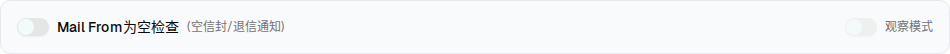

| 所属组件 | 2.1 基础格式检查 BasicFormatCheck |
| 主文件 | filter-rules-identity-auth-spoofing/index.html |
| 触发路径 | 层级 0/1 → 检查项左侧「启用」Switch → off |
| 耦合规则 | if (!checked) setObserve(false)——关闭检查项会同步关闭观察模式，且观察模式开关变 disabled |
关闭「Mail From为空检查」左侧开关 → 卡片正文（动作行/提示/告警）整体卸载，观察模式开关置灰
检查SMTP信封发信人是否为空，空信封常用于退信通知、自动回复、邮件列表等系统邮件，但也可能被滥用发送匿名邮件。
高风险动作：建议先开启观察模式测试影响范围
检查发信人地址格式是否符合RFC标准。格式错误通常是垃圾邮件或恶意软件生成的特征，建议阻断。
检查邮件头中的From发信人与SMTP信封Mail From是否一致。不一致可能是合法代发服务或恶意身份仿冒。

| 元素 | 启用态 | 禁用态（本层） |
|---|---|---|
| 卡片正文 | 失败动作行 + Info 说明 +（条件）告警 | 整体卸载（{check && (<>…)}） |
| 观察模式 Switch | 可点击 | disabled，且被强制置为 unchecked |
| 观察模式文案 | text-xs | text-xs text-muted-foreground（置灰） |
| 「观察中」标签 | 按观察态显示 | 不显示 |
| 比对项 | demo 实际 DOM | 嵌入 spec 的 HTML | 是否一致 |
|---|---|---|---|
| 根节点 | div.ml-6[data-card=empty] | div.ml-6[data-card=empty] | ✅ |
| 节点总数 | 11（启用态 28） | 11 | ✅ |
| 直接子节点数 | 1（仅 header 行） | 1 | ✅ |
| 失败动作行 | 未渲染 | 预览中置 hidden（等效卸载） | ⚠ 有意差异 |
| 观察模式 Switch | disabled + data-state=unchecked | 同 | ✅ |
实现差异说明：demo 靠条件渲染卸载正文节点；spec 预览保留节点并置 hidden，以便反复开关而不丢失状态。可见结果一致（hidden 元素不参与布局），节点数因此表现为 28 而非 11。